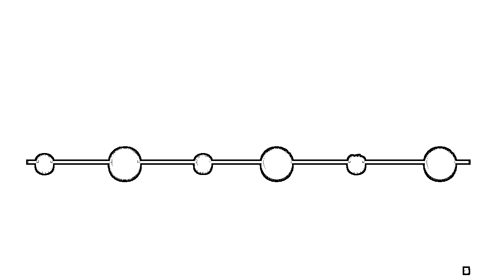

来源：https://balfcirt91j.feishu.cn/docx/AnkEdEtEtoXIbexWlQ3cL6zenFf
先来做个自我介绍，我是菜菜，有12年的互联网内容运营经验，目前是“人人都是产品经理的专栏作者”，也是生财有术的老会员了，我利用业余时间，在做ChatGPT的项目，我还联合和两位生财有术的大佬、两位在RPA和Python领域颇有建树的IP，一起给大家提供ChatGPT智能创作、智能自动、智能工具的一体化解决方案，这也是目前ChatGPT落地实战中比较全面的一个解决方案。
其实我知道ChatGPT是在今年1月，真正应用是在今年的二月初，我相信在群里面有一些小伙伴比我涉及得更早，去年已经开始涉足了，那为什么我作为一个后来者，我能来讲这个主题呢？除了本人的执行力较强之外，其实和我有12年内容运营的经验也相关。

我在做新媒体之前，有4年的记者经验，擅长做用户洞察和采访对话，然后接下来是经历了12年的新媒体生涯，从最早的微博、公众号、到后来的今日头条、行业垂直平台、短视频直播，我都深度参与，并拿到过还不错的成绩，其实做内容本身就是在做对话，你需要将一些晦涩难懂的专业知识，讲得通俗有趣吸引人，这十分考究用户洞察力和表达能力，我之所以能和ChatGPT高效对话，是因为我清楚地知道，其实ChatGPT就是一个智商很高，但情商很低的小孩，你需要用它一听就能明白的话，来和它对话。
至于我为什么会想到要去做ChatGPT项目，是因为，我在抖音做ChatGPT直播、帮助直播间的人回答问题时，我发现99%的人，都不会问问题，所以他们会觉得ChatGPT不好用，而这正是我擅长的部分，我也把我训练过的案例，都放到了GPT航海社这个星球里。在当时很多抖音做ChatGPT的人，还在通过卖账号、代问答，利用信息差变现，我应该是抖音里较早做内容训练的博主了，常常有来我直播间打广告卖账号的人，让我哭笑不得。
好，言归正传，今天我分享的主题分为四个部分：
1、ChatGPT的原理、学习误区
2、ChatGPT高效对话的6字真经
3、ChatGPT实战案例：写一篇小红书笔记
4、如何用ChatGPT，一个人活成一个团队
知己知彼百战百胜，我们既然要学好这一类工具，得先来了解一下它的工作原理。相信大家都看过机器猫这一部动画片，每当大雄遇到困难时，机器猫总会拿出各种各样的智能工具来解围，小时候特别想拥有一只机器猫。自从ChatGPT出现之后，可以毫不夸张地说，它就相当于机器猫照进了现实，它不但能根据我们的要求生成各式各样的内容，还能结合其他工具或者技术，做很多事。我讲个非常贴近生活的例子：我有一天在用苏打粉洗小番茄，水变红了，这是一种化学反应，我是个化学学渣，我的孩子偏偏问我，为什么水会变红，我答不上来，我去查ChatGPT，让它用小孩子能听懂的话语解释一下，它一下就给出了答案。所以我们是不是可以将这种技术嫁接在一个可爱的数字卡通人身上，作成一个“小孩的十万个为什么”解答器，是不是能赚钱？所以，说GPT技术是世界上第三次科技革命，它的贡献不亚于互联网的诞生，这句话一点不为过。
ChatGPT的全拼：chat generative pre-trained transformer，翻译过来是聊天生成式预训练模型。
具体是什么意思呢？我接下来一一来给大家解释，虽然它是按照“聊天生成式——预训练——模型”这样的组词顺序来组成的，但按照我的理解，我觉得也是比较通俗的理解，它的逻辑应该是倒序，也就是说先学习语言模型，再是预训练，再是聊天生成式。我们先来说模型。这里的模型是指语言模型学习，什么意思？
我来举一个比较形象的比喻，我们读书的时候，我们都学习过语文这一门科目，我们会学习不同体裁的文章：文言文、书信、议论文、散文……每一种体裁其实就是一种语言模型。ChatGPT学习了大量的语言模型，所以这也是为什么它能够听懂我们人类所说的话。
什么叫做预训练呢？我也用一个比较形象的比喻，我们人类的知识库就好像一个庞大的图书馆，机器人在这个图书馆里学习了所有的知识。
大家可以看到我这个插图，是由目前一个比较火热的AI绘画工具midjourney，结合ChatGPT生成的。
什么叫聊天生成式？其实这要得益于编码和解码这样创新技术的诞生，在2015年，这个技术就诞生了。什么叫编码解码呢？我同样用一个比较形象的比喻来解释。我们在和计算机对话的过程中，会有两个机器人助手，一个是编码器助手，他可以把我们人类的语言编译成计算机能听懂的语言，传送给计算机，计算机听懂了这些语言之后，它会生成答案，这个时候，解码器助手出现了，它会把计算机语言编译成大白话，这就是编码解码的意思。
以上就是GPT的工具原理，我了解到，很多小伙伴感觉ChatGPT的使用门槛比较高，上网问题，账号注册问题，尤其最近，ChatGPT不让咱们使用，封禁了一大批机器注册的账号，连PLUS也遭殃了，很多人陷入惶恐，是不是就这样与ChatGPT绝缘了？我要跟大家讲，凡事都有解决办法。
首先我们要克服的是，账号和上网问题，你要自己去学习解决，不要去买成品号，不要去指望别人帮你注册，风险很大。不要懒、不要怕麻烦，不要等着那些老师来手把手教你，第一没人能保证提供给你的永远稳定，即便是2980的训练营，这也是我目前见到过最贵的训练营了，他们也没法解决你这事。二是自己动手丰衣足食，你不怕封号，封了再申请就是，你不用再被别人左右。而且这事不难的，你花一个晚上是绝对可以解决的。我的学员，我给他提供了注册教程之后，95%以上的人都在当天已经自己注册成功了，还有5%的人，他会放弃，这是非常非常可惜的，因为账号和登陆问题，是入门GPT的基础，如果你连这个问题都不解决，我建议你别浪费时间学习了。
这是第一点，第二点，我们不要在ChatGPT这一棵树上吊死，穷则思变，两条腿走路。什么意思？除了ChatGPT这样的工具之外，其实还有很多类似的工具，它的使用门槛会低一些，比如notion AI、new being以及文心一言，还有open ai前员工做的Claude、阿里的GPT工具已经开放内测，华为的盘古大模型也马上要上线，大家不要愁没有工具用。我这里给大家对比了，不需要用魔法的就是notion AI和文心一言。
在智能程度方面，notion AI和ChatGPT的智能程度几乎是一样的，这里我已经进行了对比实验，可以给大家展示一下效果：
其实大差不差的，不要去神话工具，不要让某个工具禁锢我们前进的脚步，而是要认识到，使用工具的人、你的用法才是其中的关键因素。
我经历了大概一个半月的训练和培训经验，我发现大家在使用和学习上还是有误区的，我特别想提出来，这样你可以少走很多弯路。
第一个是一蹴而就，认为我用了的GPT之后，我就能够马上解决所有的问题，甚至是一夜暴富，其实无论是学习、还是赚钱，都一样，都是循序渐进的，没有办法一蹴而就。第二个，会有一些学员认为，我自己在某个领域，比喻营销方面经验不足，ChatGPT能补足我这方面的经验，让我成为营销大师，我就能接咨询了，这也是一种误区。因为工具只是一个辅助，工具的使用高度依赖你的行业经验，你的行业经验才是试金石，他没有办法在短时间内让一个0经验的小白成为领域高手。
第三个误区是拿来主义，也就是说ChatGPT生产的内容不经思索，不加修改，你拿来就直接用，这是不对的。因为它是基于知识库生成的内容，而且并不一定在那些非常专业的行业里，它进行了预训练，所以ChatGPT生成的内容，你自己是要做审核的，不一定百分百正确，你需要用你的行业经验来校正、调教它，它错了，你就要告诉它哪里错了，正确答案是什么。
第四点尤为重要，就是巨婴式地学习，比如说我现在解决不了魔法问题、账号问题，那么我就不学了，除非你能直接给我一个解决方案。我对话发现ChatGPT生成的内容，满足不了我，我自己也不去动手训练，我就等着老师来给我训练，直到满意为止，或者我就要求那种保姆式的、一对一的指导服务，恕我直言，这样的心态，你学不好。在你的行业里，你才是最懂行的人，我教你了对话逻辑后，你得自己去动手训练，不要假手于人。只要你勤学多练多交流，你是可以解决的，不要等着别人来喂给你解决方案，学习是你自己的事。
在AIGC的时代，其实我们所有人都站在了同一起跑线上，拼的就是这两种能力：
第一个也是我刚才说到的行业经验。比如说我在内容营销领域，我做了12年，那我做内容营销的逻辑方法论，这个就是我的竞争壁垒，我有了这些好的方法，我就可以去训练的GPT做出好的内容，第二个拼的就是执行力，这个没有什么讨巧，也没有说谁比谁厉害，像我虽然是今年二月份才入门ChatGPT，但是我每天会利用我中午休息的时间、晚上业余的时间，不断地训练+学习+提问，我今天能够在这里分享，拼的就是执行力，我并没有比屏幕前的你聪明多少。
好，接下来讲我们今天的重点部分，高效对话的ChatGPT的六字真经。有很多小伙伴在和ChatGPT对话时，发现它生产的内容并不能达到我们的期望，来来回回都是在讲一些车轱辘话，这是为什么呢？其实是你问问题的方式不对。这里给到几个反面案例：
我们日常和别人对话的时候，常常喜欢直抒胸臆，但是和ChatGPT对话不能那样，因为它并不了解，你问题背后的信息，你是谁，你为什么要问这个问题，你期望达到什么目的等等。怎样去提升对话的效率和质量呢？我通过前段时间的训练经验，再结合我的内容营销、用户洞察和采访经验，我提出了高效对话的六字真经：背景、要求，角色。
我应该是最早提出这一概念的人，我发现后来有很多人在我的基础上做了添加，但从我的经验来看，你只要掌握这6个字，你提问的效果会提升90%。
背景：你需要介绍你是谁？你是做什么行业的？你问这个问题，你的目的是什么？你面向的是什么人群；
要求：你希望它输出的结果具体有哪一些要求？比如说不少于1000字、要以悬念式的提问开头、要包含6个要点、你希望它生成的内容能够吸引什么样的人群，你希望他们做什么动作。
角色：你需要赋予ChatGPT一个专业的角色，目前它是能够扮演上百种行业专家的角色。包括医生、律师、咨询顾问、新媒体经理等等。你还可以和它去玩角色扮演的游戏，除了给它赋予角色之外，你也可以给你自己赋予一个角色。比如我在大家的问题当中，看到有的小伙伴是销售，那么我如何通过ChatGPT来生成销售话术呢？那你就可以让他扮演一个资深的、有十年经验的销售，然后你扮演产品的目标人群，让他不断地来和你对话、问问题，最终想方设法把产品卖给你。这样一步一步，就能生成话术。我的知识星球里，就有这样的案例。
正确的对话示范是怎样的？还是以“生产游戏攻略直播的脚本文案”为例：
我们来看一下优化前后的生成内容对比：
在会话优化前，它给的内容其实是一些正确的废话，没有落脚点。会话优化之后，它会给出一些比较细节的点：比如资源管理部队的选择和搭配、小技巧等等，由于版面问题，我没有截全。这个内容要丰富很多。所以你看，问问题的方式不一样，我们生成的内容也是天差地别的。
好，下面进入第三个部分：讲解实战案例，四个步骤，用ChatGPT写一篇小红书旅游笔记，这四个步骤是哪四个呢？
第一，先通过ChatGPT来帮我们获取基础的内容，第二，让它生成文案，第三个，通过ChatGPT可以快速地插入emoji表情，这也是小红书文案的特点，第四，让它帮我们生成爆款标题，这个实战案例，是写一篇邵阳隆回的旅游笔记。
先来看第一个步骤：
我的提问是包含了背景，角色和要求的，我的舅舅准备组织一场家人的旅行活动，五个老人都在60岁以上，这里就是我的背景；角色：我让ChatGPT扮演邵阳隆回当地的导游，我的要求是人均只有1000元的预算。我们可以看到ChatGPT给我生成的内容。因为版面的关系，我没有截全，其实后面还有很多。通过同样的方式，我把酒店的内容、美食的内容也获取了，由于版面的关系，我没有把美食内容放上来。
获取到内容之后，第二个就是让ChatGPT帮我们生成小红书文案。我给它赋予了一个角色L小红书的旅游博主，帮我把以上的信息生成一篇小红书旅游笔记。然后它就开始生成了。
第三步，添加emoji表情：我给它指令，在每段开头的位置插入合适的emoji表情，文章的内容里也要插入表情，我们来看一下，神奇的事情发生了：
你看它的表情配得很合适，比如龙船溪漂流，它插入的就是船的表情，隆回大观园，这是一个植物园，它插入的就是花儿的表情，还有红军长征纪念馆，它插入的表情是一面红旗。
最后，我让ChatGPT帮我生成标题，这里我给它的角色是爆款标题生成器，要求是标题当中要包含解决什么问题、笔记的解决方案是什么、解决后的结果是什么，以及标题的字数：
可以看到，生成的标题。还是挺不错的，至少能打80分的水平。这样的水平，我们在外面可能要花4000~5000去请一个文案，但是有了ChatGPT，这些钱都省下来了。
我建议所有的运营人首先要掌握的技能是智能的内容创作。内容创作其实也是运营人必备的一个基础技能。无论你是做社群运营还是产品运营、用户运营，你都是在和人对话，你都是要输出内容的。你写的一段社群话术、或者是产品手册，都必须让用户看得懂、戳中他们的痛点，给到利益点，才能让用户马上行动起来。而内容营销就是在干这个事。通过内容创作，我们能锻炼如何高效和ChatGPT对话的技巧，这也是入门的必备技能。对于专门做内容生产的小伙伴来说，可以用它来做竞品分析，市场调查，来确定你的内容定位，包括短视频，小红书，知乎内容以及文章插图的制作。后续你还可以打造自己的IP，用它来做课程。即便以上你都不需要，你总是要做方案汇报的对吧，这也是内容创作之一，你有了ChatGPT，能大大提升效率。
第二个技能就是结合RPA工具来去提升自己的运营效率，RPA是流程自动化工具，这个在早几年之前就火了，也就是所谓的轻代码、0代码工具，把编程做成了模块化，我们日常运营当中那些繁琐的，重复化的工作，通过RPA，就像搭积木一样，把这些流程在搭建起来，就能实现自动化运转，把我们的精力腾出来去做别的事。比如用ChatGPT批量、自动去写小红书文案，一天写个几百篇、上千篇是能做到的。
第三个技能，是ChatGPT加Python。其实Python在前几年就非常火，说是运营人的必备利器，市面上也出现了很多教运营人如何学习Python的课程，我自己曾经也报名了，但是确实我没有编程基础，我学不会。有了ChatGPT之后，我们可以和python无缝对接，让ChatGPT把我们的指令变成Python语言。这样就打破了必须具备编程基础的专业壁垒。
我们学会了这三大技能之后，如何变现呢？
比如在智能创作方面，我们可以通过写产品软文、做营销海报，去做自媒体，售卖自己的产品，或者是利用业余时间进行写作接单，像我的学员学了两周，就可以接单变现。同时你还可以总结自己的行业经验，做行业IP，做自媒体变现。那么ChatGPT+RPA如何变现呢？这里最重要的是一个人活成一个团队，比如我们已经推出了ChatGPT+RPA超级写手机器人，在前面我也介绍过。我曾经带着一个做营养科普的新媒体团队，做到了新榜健康榜的前20强。在这个团队里，需要多个人来配合：营养专家、文案、社群运营+推广、插画师，但是有了ChatGPT+RPA，我们一个人可以活成一个团队。接下来这些人员的费用都省掉了。另外一个变现的途径，是我们可以在垂直领域里训练大量的案例，用RPA批量导出这些案例，生成行业的命令模板库，去做变现，现在已经有公司在做这件事，我们需要抢在别人的前面。
第三个，我们可以结合垂直行业加上一些细分的场景，通过Python去开发出运营机器人，来进一步提升效率。比如在大健康领域、在数据分析领域，在私域运营领域，我们都可以开发出运营工具来提升工作效率。开发出一个小场景的工具，就能卖出你意想不到的结果，大家知道一个会话导出机器人，卖了多少份吗？9块9一个月，卖了1万份。总之我们有了这些技能，我们就能够掌握先进生产力，一个人活成一个团队。
即便是你不能够利用这些技能变现，你学习了这些技能之后，你也可以为你的职业生涯镀金。
我们可以看一下boss上目前的ChatGPT的招聘岗位：
比如说已经有ChatGPT新媒体运营主管，ChatGPT应用开发、ChatGPT训练师，ChatGPT做知识问答的副业等等。无论你是想为职业生涯镀金，还是说利用业余时间去做副业，你都需要掌握这三大技能。这里我特别说一下应用开发，其实我觉得运营人是具有开发产品的天然优势的，因为你们懂流程、懂用户的需求，我们常常吐槽，为什么技术做出来的东西那么垃圾，为什么技术那么难沟通，当然，这里我没有贬低的意思，我只是在说某些不懂运营的技术，真的很难沟通，你掌握了这些，你是不是不需要技术，你自己就能做开发。所以这也是为什么我说，一个人活成一个团队。
最后我还有三个提醒，这也是基于我对目前形势的一些观察，据统计，目前AI的工具有上千种，我建议大家不要做工具的囤积者，就像仓鼠一样去囤积这些工具，而是一个工具，我就把它用透，做到知行合一，先落地到工作中，先动起来。
第二，我们要快，跟上AI时代的速度，先于老板，掌握先进生产力。我们公司的老板那天在群里就问到一个AI绘画工具，问我们用了没，我们不要等到老板去问，我们自己先学起来。
第三，我觉得也是比最为重要的，不要认为你有了AI工具，你就可以高枕无忧了，我们依然要提升自己的专业水平，提升行业经验，还是那句话，工具让大家都在同一起跑线上，关键是工具使用者的逻辑和心法，这也是你未来的竞争壁垒。
在AIGC时代，我们不要去做信息差的布道者者，而是真正地把先进信息落到实际的工作场景当中，现在市面上也有很多去做账号变现、或者做信息差变现的团队，我建议大家保持冷静、理性、务实的态度，真正把工具去用到实处，这样你未来才会更有竞争力，谢谢大家。